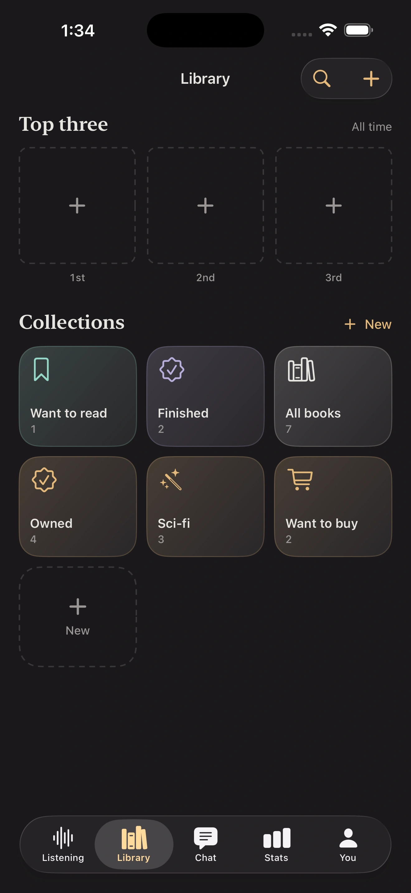

Credit the performance
Store narrator credits beside author, runtime, chapter progress, rating, and the rest of the book’s record.
The voice is part of the book
A great performance stays with you. Booktrace keeps narrators attached to your books and lets you explore your listening library through the voices behind it.
Track your audiobooks
Store narrator credits beside author, runtime, chapter progress, rating, and the rest of the book’s record.
Open a narrator to see the audiobooks they performed and the titles from that voice already in your library.
Keep the narrators you enjoyed visible when choosing what to listen to next or revisiting a series.
More than a credit line
Pacing, character voices, accent, tone, and ensemble casting all shape the experience. Tracking only title and author leaves out the person who occupied your headphones for ten, twenty, or forty hours.
A narrator change between installments can be as noticeable as a major character change. Keeping narrator credits attached to every title makes those patterns easy to remember.
When a narrator makes a book exceptional, their other work becomes a meaningful discovery path. Booktrace turns narrator names into part of the library rather than disposable metadata.
Narrators live alongside your sessions, chapter progress, notes, ratings, and shelves. There is no separate spreadsheet or public profile to maintain.